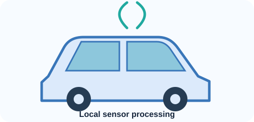
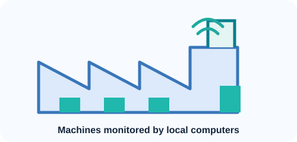

WHERE IT IS USED
Edge computing in everyday life
Many systems use nearby processing when a quick response, local operation, or reduced network traffic is useful.

TRANSPORTATION
Connected vehicles
A vehicle can process information from cameras and sensors locally to support driver-assistance features. Time-sensitive information may need to be handled quickly rather than waiting for a distant server.

MANUFACTURING
Smart factories
Machines can monitor temperature, vibration, or production conditions. Nearby computers can flag unusual readings so workers can investigate equipment.

HEALTH AND SMART BUILDINGS
Monitoring systems
Connected sensors can process readings close to where they are collected. System designers must also consider privacy, accuracy, security, and human oversight.
Important consideration
Edge computing is not automatically safer, cheaper, or faster in every situation. Results depend on how the system is designed. Devices still need secure configuration, software updates, access controls, and reliable maintenance.